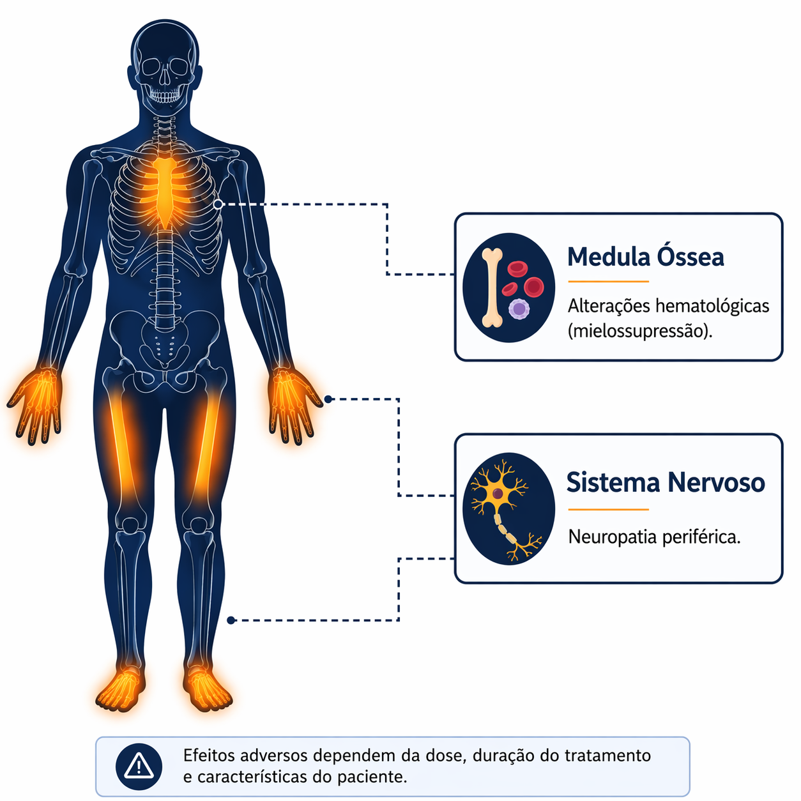

Inibidores da síntese proteica
Os antibacterianos que inibem a síntese proteica exploram diferenças estruturais entre os ribossomos bacterianos 70S e os ribossomos citoplasmáticos humanos 80S. Essa distinção é fundamental para a seletividade terapêutica dessa classe. Entretanto, existe um ponto de convergência biologicamente relevante: as mitocôndrias humanas possuem ribossomos funcionalmente semelhantes aos ribossomos bacterianos, refletindo sua origem evolutiva 2,9.
Essa proximidade explica parte do perfil de toxicidade observado em algumas classes de antibacterianos que atuam na síntese proteica. Quando a exposição é prolongada ou cumulativa, a interferência sobre ribossomos mitocondriais pode comprometer a produção de proteínas envolvidas na fosforilação oxidativa. Tecidos com alta demanda energética ou elevada taxa de renovação celular tornam-se particularmente vulneráveis 3.
Clinicamente, essa interferência pode se manifestar como alterações hematológicas, neuropatia periférica ou, em situações raras, acidose láctica associada à disfunção mitocondrial 9.

A toxicidade hematológica relacionada às oxazolidinonas ilustra esse mecanismo. Fármacos como a linezolida podem produzir mielossupressão quando utilizados por períodos prolongados. O risco aumenta geralmente após duas semanas de tratamento e está associado à exposição cumulativa. Na maioria dos casos, o efeito é reversível após a suspensão do medicamento, mas terapias prolongadas exigem monitorização hematológica 9.
Outras classes que atuam na síntese proteica apresentam padrões distintos de efeitos adversos. As tetraciclinas, por exemplo, podem depositar-se em tecidos calcificados em desenvolvimento, razão pela qual seu uso é restrito em determinadas faixas etárias 2. Outro grupo, os macrolídeos podem interferir no metabolismo hepático e estão associados ao prolongamento do intervalo QT, especialmente em pacientes com fatores predisponentes ou em uso concomitante de outros fármacos com o mesmo efeito 2.
Eventos neurológicos também podem ocorrer durante exposições prolongadas a alguns antibacterianos dessa classe, sobretudo em pacientes com insuficiência renal ou em uso simultâneo de múltiplas medicações 9.
De modo geral, os efeitos adversos relacionados aos inibidores da síntese proteica dependem mais da duração da exposição do que de reações imunológicas imediatas. Terapias prolongadas, depuração reduzida do fármaco e reserva funcional limitada do paciente aumentam a probabilidade de toxicidade 2,9.
O mesmo mecanismo que bloqueia a produção de proteínas bacterianas pode, portanto, interferir em processos celulares humanos quando há proximidade estrutural suficiente entre os sistemas biológicos envolvidos 2,3.